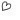

| 2015/04 01 Wed | 相楽伊織 はの字のへ_(. . * )vol.20 |
みなさんごんばんはー！
さがらいおりです！
もう 4 月ですねー
早い！！
そして、
目がかゆい
花粉症かな～？
嫌だよ～(；；)
あ、
皆さん今日小さいウソつきましたかー？
1 年で嘘ついていいの今日だけですよ♡？
昨日、新宿ルミネに行ってきました～♡
もちろんお笑いを観に！！
昨日観れたのは
LLRさん
ゆったり感さん
5GAPさん
シマッシュレコードさん
囲碁将棋さん
犬の心さん
シューレスジョーさん
天狗さん
トンファーさん でした！
天狗さんのアメトーークのパクリたい1の回で
｢いや、似てるけどー！｣ってやつ
生で観れてテンション上がったなー♡
また行きたい♡
自由席だったから
H 列に座りました(´,,•ω•,,)♡
最前だとなんか恥ずかしいから、、
あと、今度ママとNGK行こうね！
って約束したから行ってくる♪♪
あと、今日お仕事終わってから
乃木坂カフェに行ってきました♪♪
柱にサイン書いたから
これから行くよって方は
推しメンのサイン探してみてね！
今日はレディースdayだったらしく
女の子でいっぱいでした♡
時間があったら
食べに行きたいけど
チケット制なのね、
まいちゅんが働いてるのも見てみたいなー( ´艸｀)
生田さんと深川さんは初 2 ショット♡
橋本さんも初だ！
パ～ラダイスやってもらえました♪♪
西野さんは
よく一緒に撮ってくれます♡
お顔が小さい(>_<)！
告知
4 / 2 Gザテレビジョン
みり愛と琴子と 3 人で裏表紙を
飾らせていただけました！
中ページもそれぞれのワンショットとか
色々載っているので見て下さい♪♪
4 / 4 MUSIC FAIR
4 / 5 MUSIC JAPAN
よろしくお願いしますm(_ _)m
i o r i .
